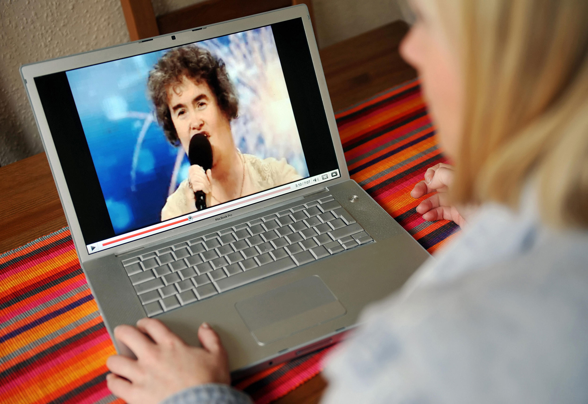
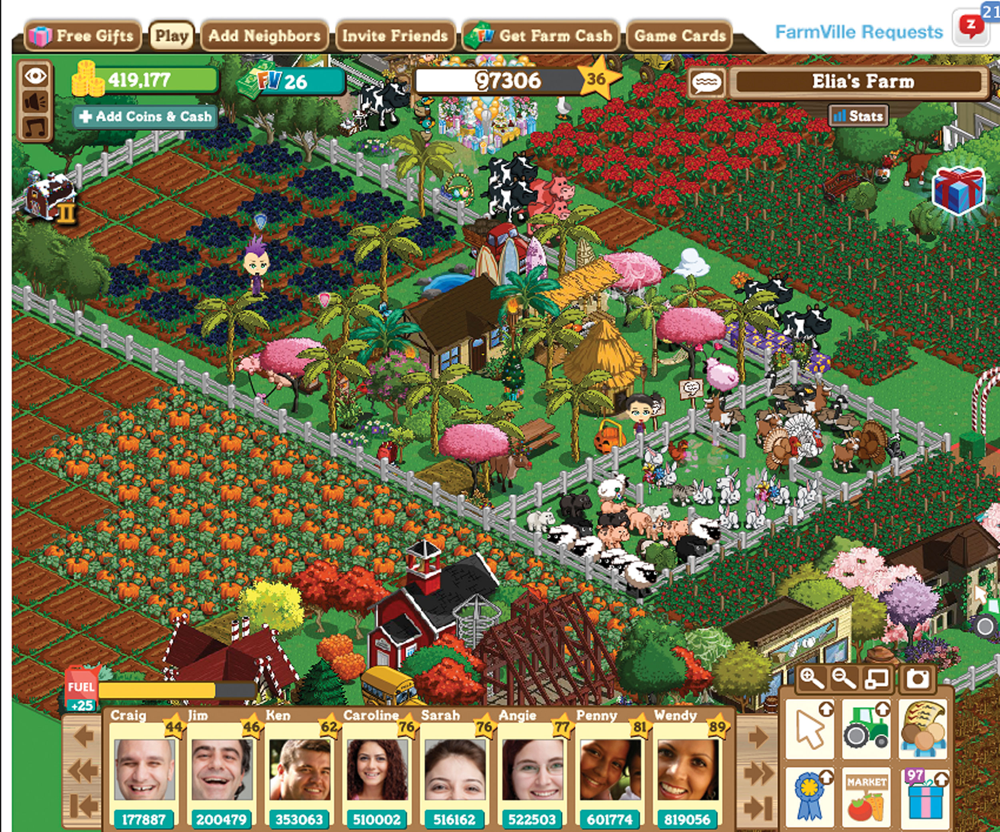

Although GeoCities lost market share, and although theGlobe.com never really made it to the 21st century, social networkingA website that provides a way for people to interact with each other. Often, this involves “friends” and some method of communication, whether through photos, videos, or text. has persisted. There are many different types of social mediaAny social networking service. This is a blanket term for person-to-person connections on the Internet, unlike television, radio, or newspaper. available today, from social networking sites like Facebook to blogging services like Blogger and WordPress.com. All these sites bring something different to the table, and a few of them even try to bring just about everything to the table at once.
Social networking services—like Facebook, Twitter, LinkedInA social networking service that caters to business professionals looking for networking opportunities., Google BuzzGoogle’s social networking service that is built into its Gmail service., and MySpace—provide a limited but public platform for users to create a “profile.” This can range anywhere from the 140-character (that’s letters and spaces, not words) “tweets” on Twitter, to the highly customizable MySpace, which allows users to blog, customize color schemes, add background images, and play music. Each of these services has its key demographic—MySpace, for example, is particularly geared toward younger users. Its huge array of features made it attractive to this demographic at first, but eventually it was overrun with corporate marketing and solicitations for pornographic websites, leading many users to abandon the service. In addition, competing social networking sites like Facebook offer superior interfaces that have lured away many of MySpace’s users. MySpace has attempted to catch up by upgrading its own interface, but it now faces the almost insurmountable obstacle of already-satisfied users of competing social networking services. As Internet technology evolves rapidly, most users have few qualms about moving to whichever site offers the better experience; most users have profiles and accounts on many services at once. But as relational networks become more and more established and concentrated on a few social media sites, it becomes increasingly difficult for newcomers and lagging challengers to offer the same rich networking experience. For a Facebook user with hundreds of friends in his or her social network, switching to MySpace and bringing along his or her entire network of friends is a daunting and infeasible prospect. Google has attempted to circumvent the problem of luring users to create new social networks by building its Buzz service into its popular Gmail, ensuring that Buzz has a built-in user base and lowering the social costs of joining a new social network by leveraging users’ Gmail contact lists. It remains to be seen if Google will be truly successful in establishing a vital new social networking service, but its tactic of integrating Buzz into Gmail underscores how difficult it has become to compete with established social networks like Twitter and Facebook.
Whereas MySpace initially catered to a younger demographic, LinkedIn caters to business professionals looking for networking opportunities. LinkedIn is free to join and allows users to post resumes and job qualifications (rather than astrological signs and favorite television shows). Its tagline, “Relationships matter,” emphasizes the role of an increasingly networked world in business; just as a musician might use MySpace to promote a new band, a LinkedIn user can use the site to promote professional services. While these two sites have basically the same structure, they fulfill different purposes for different social groups; the character of social networking is highly dependent on the type of social circle.
Twitter offers a different approach to social networking, allowing users to “tweet” 140-character messages to their “followers,” making it something of a hybrid of instant messaging and blogging. Twitter is openly searchable, meaning that anyone can visit the site and quickly find out what other Twitter users are saying about any subject. Twitter has proved useful for journalists reporting on breaking news, as well as highlighting the “best of” the Internet. Twitter has also been useful for marketers looking for a free public forum to disseminate marketing messages. It became profitable in December 2009 through a $25 million deal allowing Google and Microsoft to display its users’ 140-character messages in their search results.Eliot Van Buskirk, “Twitter Earns First Profit Selling Search to Google, Microsoft,” Wired, December 21, 2009, http://www.wired.com/epicenter/2009/12/twitter-earns-first-profit-selling-search-to-google-microsoft. Facebook, originally deployed exclusively to Ivy League schools, has since opened its doors to anyone over 13 with an email account. With the explosion of the service and its huge growth among older demographics, “My parents joined Facebook” has become a common complaint.See the blog at http://myparentsjoinedfacebook.com/ for examples on the subject.
Another category of social media, blogs began as an online, public version of a diary or journal. Short for “web logs,” these personal sites give anyone a platform to write about anything they want to. Posting tweets on the Twitter service is considered micro-blogging (because of the extremely short length of the posts). Some services, like LiveJournal, highlight their ability to provide up-to-date reports on personal feelings, even going so far as to add a “mood” shorthand at the end of every post. The Blogger service (now owned by Google) allows users with Google accounts to follow friends’ blogs and post comments. WordPress.com, the company that created the open-source blogging platform WordPress.org, and LiveJournal both follow the freemium model by allowing a basic selection of settings for free, with the option to pay for things like custom styles and photo hosting space. What these all have in common, however, is their bundling of social networking (such as the ability to easily link to and comment on friends’ blogs) with an expanded platform for self-expression. At this point, most traditional media companies have incorporated blogs, Twitter, and other social media as a way to allow their reporters to update instantly and often. This form of media convergence, discussed in detail in Section 11.3 "The Effects of the Internet and Globalization on Popular Culture and Interpersonal Communication" of this chapter, is now a necessary part of doing business.
There are many other types of social media out there, many of which can be called to mind with a single name: YouTube (video sharing), Wikipedia (open-source encyclopedia composed of “wikis” editable by any user), Flickr (photo sharing), and Digg (content sharing). Traditional media outlets have begun referring to these social media services and others like them as “Web 2.0.” Web 2.0 is not a new version of the web; rather, the term is a reference to the increased focus on user-generated content and social interaction on the web, as well as the evolution of online tools to facilitate that focus. Instead of relying on professional reporters to get information about a protest in Iran, a person could just search for “Iran” on Twitter and likely end up with hundreds of tweets linking to everything from blogs to CNN.com to YouTube videos from Iranian citizens themselves. In addition, many of these tweets may actually be instant updates from people using Twitter in Iran. This allows people to receive information straight from the source, without being filtered through news organizations or censored by governments.
In 2009, Susan Boyle, an unemployed middle-aged Scottish woman, appeared on Britain’s Got Talent and sang “I Dreamed a Dream” from the musical Les Misérables, becoming an international star almost overnight. It was not her performance itself that catapulted her to fame and sent her subsequently released album to the top of the UK Billboard charts and kept it there for 6 weeks. What did it was a YouTube video of her performance, viewed by 87,000,000 people and counting.BritainsSoTalented, “Susan Boyle - Singer - Britains Got Talent 2009,” 2009, http://www.youtube.com/watch?v=9lp0IWv8QZY.
Figure 11.5
Susan Boyle turned from a successful television contestant into an international celebrity when the YouTube video of her performance went viral.
Media that is spread from person to person when, for example, a friend sends you a link saying “You’ve got to see this!” is said to have “gone viralWhen a video, news story, or photo is emailed or sent from person to person, without any direction from a mainstream source..” Marketing and advertising agencies have deemed advertising that makes use of this phenomenon as “viral marketingAn attempt by marketers to produce things that “go viral” in order to build hype for a product..” Yet many YouTube sensations have not come from large marketing firms. For instance, the four-piece pop-punk band OK Go filmed a music video on a tiny budget for their song “Here It Goes Again” and released it exclusively on YouTube in 2006. Featuring a choreographed dance done on eight separate treadmills, the video quickly became a viral sensation and, as of May 2011, has over 7,265,825 views. The video helped OK Go attract millions of new fans and earned them a Grammy award in 2007, making it one of the most notable successes of viral Internet marketing. Viral marketing is, however, notoriously unpredictable and is liable to spawn remixes, spin-offs, and spoofs that can dilute or damage the messages that marketers intend to spread. Yet, when it is successful, viral marketing can reach millions of people for very little money and can even make it into the mainstream news.
Recent successes and failures in viral marketing demonstrate how difficult it is for marketers to control their message as it is unleashed virally. In 2007, the band Radiohead released their album In Rainbows online, allowing fans to download it for any amount of money they chose—including for free. Despite practically giving the album away, the digital release of In Rainbows still pulled in more money than Radiohead’s previous album, Hail to the Thief, while the band simultaneously sold a huge number of $80 collector editions and still sold physical CDs months after the digital release became available.New Musical Express, “Radiohead Reveal How Successful ‘In Rainbows’ Download Really Was,” October 15, 2008, http://www.nme.com/news/radiohead/40444. In contrast, the food giant Healthy Choice enlisted Classymommy.com blogger Colleen Padilla to write a sponsored review of its product, leading to a featured New York Times article on the blogger (not the product), which gave the product only a passing mention.Pradnya Joshi, “Approval by a Blogger May Please a Sponsor,” New York Times, July 12, 2009, http://www.nytimes.com/2009/07/13/technology/internet/13blog.html. Often, a successfully marketed product will reach some people through the Internet and then break through into the mainstream media. Yet as the article about Padilla shows, sometimes the person writing about the product overshadows the product itself.
Not all viral media is marketing, however. In 2007, someone posted a link to a new trailer for Grand Theft Auto IV on the video games message board of the web forum 4chan.org. When users followed the link, they were greeted not with a video game trailer but with Rick Astley singing his 1987 hit “Never Gonna Give You Up.” This technique—redirecting someone to that particular music video—became known as Rickrolling and quickly became one of the most well-known Internet memesAny catchphrase, video, or piece of media that becomes a cultural symbol on the Internet. of all time.Fox News, “The Biggest Little Internet Hoax on Wheels Hits Mainstream,” April 22, 2008, http://www.foxnews.com/story/0,2933,352010,00.html. An Internet meme is a concept that quickly replicates itself throughout the Internet, and it is often nonsensical and absurd. Another meme, “Lolcats,” consists of misspelled captions—“I can has cheezburger?” is a classic example—over pictures of cats. Often, these memes take on a metatextual quality, such as the meme “Milhouse is not a meme,” in which the character Milhouse (from the television show The Simpsons) is told that he is not a meme. Chronicling memes is notoriously difficult, because they typically spring into existence seemingly overnight, propagate rapidly, and disappear before ever making it onto the radar of mainstream media—or even the mainstream Internet user.
Social media allows an unprecedented volume of personal, informal communication in real time from anywhere in the world. It allows users to keep in touch with friends on other continents, yet keeps the conversation as casual as a Facebook wall post. In addition, blogs allow us to gauge a wide variety of opinions and have given “breaking news” a whole new meaning. Now, news can be distributed through many major outlets almost instantaneously, and different perspectives on any one event can be aired concurrently. In addition, news organizations can harness bloggers as sources of real-time news, in effect outsourcing some of their news-gathering efforts to bystanders on the scene. This practice of harnessing the efforts of several individuals online to solve a problem is known as crowdsourcing.
The downside of the seemingly infinite breadth of online information is that there is often not much depth to the coverage of any given topic. The superficiality of information on the Internet is a common gripe among many journalists who are now rushed to file news reports several times a day in an effort to complete with the “blogosphere,” or the crowd of bloggers who post both original news stories and aggregate previously published news from other sources. Whereas traditional print organizations at least had the “luxury” of the daily print deadline, now journalists are expected to blog or tweet every story and file reports with little or no analysis, often without adequate time to confirm the reliability of their sources.Ken Auletta, “Non-Stop News,” Annals of Communications, New Yorker, January 25, 2010, http://www.newyorker.com/reporting/2010/01/25/100125fa_fact_auletta.
Additionally, news aggregatorsServices like Google News that aggregate stories from major professional news sources and present them in a streamlined format. like Google News profit from linking to journalists’ stories at major newspapers and selling advertising, but these profits are not shared with the news organizations and journalists who created the stories. It is often difficult for journalists to keep up with the immediacy of the nonstop news cycle, and with revenues for their efforts being diverted to news aggregators, journalists and news organizations increasingly lack the resources to keep up this fast pace. Twitter presents a similar problem: Instead of getting news from a specific newspaper, many people simply read the articles that are linked from a Twitter feed. As a result, the news cycle leaves journalists no time for analysis or cross-examination. Increasingly, they will simply report, for example, on what a politician or public relations representative says without following up on these comments or fact-checking them. This further shortens the news cycle and makes it much easier for journalists to be exploited as the mouthpieces of propaganda.
Consequently, the very presence of blogs and their seeming importance even among mainstream media has made some critics wary. Internet entrepreneur Andrew Keen is one of these people, and his book The Cult of the Amateur follows up on the famous thought experiment suggesting that infinite monkeys, given infinite typewriters, will one day randomly produce a great work of literature:Proposed by T. H. Huxley (the father of Aldous Huxley), this thought experiment suggests that infinite monkeys given infinite typewriters would, given infinite time, eventually write Hamlet. “In our Web 2.0 world, the typewriters aren’t quite typewriters, but rather networked personal computers, and the monkeys aren’t quite monkeys, but rather Internet users.”Andrew Keen, The Cult of the Amateur: How Today’s Internet Is Killing Our Culture (New York: Doubleday, 2007). Keen also suggests that the Internet is really just a case of my-word-against-yours, where bloggers are not required to back up their arguments with credible sourcesGenerally, any source with authorial or editorial backing. Anonymous sources, or people who do not give their real names, are often not credible, unless they are vouched for by a known credible source.. “These days, kids can’t tell the difference between credible news by objective professional journalists and what they read on [a random website].”Andrew Keen, The Cult of the Amateur: How Today’s Internet Is Killing Our Culture (New York: Doubleday, 2007). Follow Keen on Twitter: http://twitter.com/ajkeen. Commentators like Keen worry that this trend will lead to young people’s inability to distinguish credible information from a mass of sources, eventually leading to a sharp decrease in credible sources of information.
For defenders of the Internet, this argument seems a bit overwrought: “A legitimate interest in the possible effects of significant technological change in our daily lives can inadvertently dovetail seamlessly into a ‘kids these days’ curmudgeonly sense of generational degeneration, which is hardly new.”Greg Downey, “Is Facebook Rotting Our Children’s Brains?” Neuroanthropology.net, March 2, 2009, http://neuroanthropology.net/2009/03/02/is-facebook-rotting-our-childrens-brains/. Greg Downey, who runs the collaborative blog Neuroanthropology, says that fear of kids on the Internet—and on social media in particular—can slip into “a ‘one-paranoia-fits-all’ approach to technological change.” For the argument that online experiences are “devoid of cohesive narrative and long-term significance,” Downey offers that, on the contrary, “far from evacuating narrative, some social networking sites might be said to cause users to ‘narrativize’ their experience, engaging with everyday life already with an eye toward how they will represent it on their personal pages.”
Another argument in favor of social media defies the warning that time spent on social networking sites is destroying the social skills of young people. “The debasement of the word ‘friend’ by [Facebook’s] use of it should not make us assume that users can’t tell the difference between friends and Facebook ‘friends,’” writes Downey. On the contrary, social networks (like the Usenet of the past) can even provide a place for people with more obscure interests to meet one another and share commonalities. In addition, marketing through social media is completely free—making it a valuable tool for small businesses with tight marketing budgets. A community theater can invite all of its “fans” to a new play for less money than putting an ad in the newspaper, and this direct invitation is far more personal and specific. Many people see services like Twitter, with its “followers,” as more semantically appropriate than the “friends” found on Facebook and MySpace, and because of this Twitter has, in many ways, changed yet again the way social media is conceived. Rather than connecting with “friends,” Twitter allows social media to be purely a source of information, thereby making it far more appealing to adults. In addition, while 140 characters may seem like a constraint to some, it can be remarkably useful to the time-strapped user looking to catch up on recent news.
Social media’s detractors also point to the sheer banality of much of the conversation on the Internet. Again, Downey keeps this in perspective: “The banality of most conversation is also pretty frustrating,” he says. Downey suggests that many of the young people using social networking tools see them as just another aspect of communication. However, Downey warns that online bullying has the potential to pervade larger social networks while shielding perpetrators through anonymity.
Another downside of many of the Internet’s segmented communities is that users tend to be exposed only to information they are interested in and opinions they agree with. This lack of exposure to novel ideas and contrary opinions can create or reinforce a lack of understanding among people with different beliefs, and make political and social compromise more difficult to come by.
While the situation may not be as dire as Keen suggests in his book, there are clearly some important arguments to consider regarding the effects of the web and social media in particular. The main concerns come down to two things: the possibility that the volume of amateur, user-generated content online is overshadowing better-researched sources, and the questionable ability of users to tell the difference between the two.
Although Facebook began at Harvard University and quickly became popular among the Ivy League colleges, the social network has since been lambasted as a distraction for students. Instead of studying, the argument claims, students will sit in the library and browse Facebook, messaging their friends and getting nothing done. Two doctoral candidates, Aryn Karpinski (Ohio State University) and Adam Duberstein (Ohio Dominican University), studied the effects of Facebook use on college students and found that students who use Facebook generally receive a full grade lower—a half point on the GPA scale—than students who do not.Anita Hamilton, “What Facebook Users Share: Lower Grades,” Time, April 14, 2009, http://www.time.com/time/business/article/0,8599,1891111,00.html. Correlation does not imply causation, though, as Karpinski said that Facebook users may just be “prone to distraction.”
On the other hand, students’ access to technology and the Internet may allow them to pursue their education to a greater degree than they could otherwise. At a school in Arizona, students are issued laptops instead of textbooks, and some of their school buses have Wi-Fi Internet access. As a result, bus rides, including the long trips that are often a requirement of high school sports, are spent studying. Of course, the students had laptops long before their bus rides were connected to the Internet, but the Wi-Fi technology has “transformed what was often a boisterous bus ride into a rolling study hall.”Sam Dillon, “Wi-Fi Turns Rowdy Bus Into Rolling Study Hall,” New York Times, February 11, 2010, http://www.nytimes.com/2010/02/12/education/12bus.html. Even though not all students studied all the time, enabling students to work on bus rides fulfilled the school’s goal of extending the educational hours beyond the usual 8 to 3.
Social networking provides unprecedented ways to keep in touch with friends, but that ability can sometimes be a double-edged sword. Users can update friends with every latest achievement—“[your name here] just won three straight games of solitaire!”—but may also unwittingly be updating bosses and others from whom particular bits of information should be hidden.
The shrinking of privacy online has been rapidly exacerbated by social networks, and for a surprising reason: conscious decisions made by participants. Putting personal information online—even if it is set to be viewed by only select friends—has become fairly standard. Dr. Kieron O’Hara studies privacy in social media and calls this era “intimacy 2.0,”Zoe Kleinman, “How Online Life Distorts Privacy Rights for All,” BBC News, January 8, 2010, http://news.bbc.co.uk/2/hi/technology/8446649.stm. a riff on the buzzword “Web 2.0.” One of O’Hara’s arguments is that legal issues of privacy are based on what is called a “reasonable standard.” According to O’Hara, the excessive sharing of personal information on the Internet by some constitutes an offense to the privacy of all, because it lowers the “reasonable standard” that can be legally enforced. In other words, as cultural tendencies toward privacy degrade on the Internet, it affects not only the privacy of those who choose to share their information, but also the privacy of those who do not.
With over 500 million users, it is no surprise that Facebook is one of the upcoming battlegrounds for privacy on the Internet. When Facebook updated its privacy settings in 2009 for these people, “privacy groups including the American Civil Liberties Union … [called] the developments ‘flawed’ and ‘worrisome,’” reported The Guardian in late 2009.Bobbie Johnson, “Facebook Privacy Change Angers Campaigners,” Guardian (London), December 10, 2009, http://www.guardian.co.uk/technology/2009/dec/10/facebook-privacy.
Mark Zuckerberg, the founder of Facebook, discusses privacy issues on a regular basis in forums ranging from his official Facebook blog to conferences. At the Crunchies Awards in San Francisco in early 2010, Zuckerberg claimed that privacy was no longer a “social norm.”Bobbie Johnson, “Privacy No Longer a Social Norm, Says Facebook Founder,” Guardian (London), January 11, 2010, http://www.guardian.co.uk/technology/2010/jan/11/facebook-privacy. This statement follows from his company’s late-2009 decision to make public information sharing the default setting on Facebook. Whereas users were previously able to restrict public access to basic profile information like their names and friends, the new settings make this information publicly available with no option to make it private. Although Facebook publicly announced the changes, many outraged users first learned of the updates to the default privacy settings when they discovered—too late—that they had inadvertently broadcast private information. Facebook argues that the added complexity of the privacy settings gives users more control over their information. However, opponents counter that adding more complex privacy controls while simultaneously making public sharing the default setting for those controls is a blatant ploy to push casual users into sharing more of their information publicly—information that Facebook will then use to offer more targeted advertising.Kevin Bankston, “Facebook’s New Privacy Changes: The Good, the Bad, and the Ugly,” Deeplinks Blog, Electronic Frontier Foundation, December 9, 2009, http://www.eff.org/deeplinks/2009/12/facebooks-new-privacy-changes-good-bad-and-ugly.
In response to the privacy policy, many users have formed their own grassroots protest groups within Facebook. In response to critiques, Facebook changed its privacy policy again in May 2010 with three primary changes. First, privacy controls are simpler. Instead of various controls on multiple pages, there is now one main control users can use to determine who can see their information. Second, Facebook made less information publicly available. Public information is now limited to basic information, such as a user’s name and profile picture. Finally, it is now easier to block applications and third-party websites from accessing user information.Maggie Lake, “Facebook’s privacy changes,” CNN, June 2, 2010, http://www.cnn.com/video/#/video/tech/2010/05/27/lake.facebook.pr.
Similar to the Facebook controversy, Google’s social networking Gmail add-on called Buzz automatically signed up Gmail users to “follow” the most emailed Gmail users in their address book. Because all of these lists were public by default, users’ most emailed contacts were made available for anyone to see. This was especially alarming for people like journalists who potentially had confidential sources exposed to a public audience. However, even though this mistake—which Google quickly corrected—created a lot of controversy around Buzz, it did not stop users from creating over 9 million posts in the first 2 days of the service.Todd Jackson, “Millions of Buzz users, and improvements based on your feedback,” Official Gmail Blog, February 11, 2010, http://gmailblog.blogspot.com/2010/02/millions-of-buzz-users-and-improvements.html. Google’s integration of Buzz into its Gmail service may have been upsetting to users not accustomed to the pitfalls of social networking, but Google’s misstep has not discouraged millions of others from trying the service, perhaps due to their experience dealing with Facebook’s ongoing issues with privacy infringement.
For example, Facebook’s old privacy settings integrated a collection of applications (written by third-party developers) that included everything from “Which American Idol Contestant Are You?” to an “Honesty Box” that allows friends to send anonymous criticism. “Allowing Honesty Box access will let it pull your profile information, photos, your friends’ info, and other content that it requires to work,” reads the disclaimer on the application installation page. The ACLU drew particular attention to the “app gap” that allowed “any quiz or application run by you to access information about you and your friends.”Nicole Ozer, “Facebook Privacy in Transition - But Where Is It Heading?” ACLU of Northern California, December 9, 2009, http://www.aclunc.org/issues/technology/blog/facebook_privacy_in_transition_-_but_where_is_it_heading.shtml. In other words, merely using someone else’s Honesty Box gave the program information about your “religion, sexual orientation, political affiliation, pictures, and groups.”Nicole Ozer, “Facebook Privacy in Transition - But Where Is It Heading?” ACLU of Northern California, December 9, 2009, http://www.aclunc.org/issues/technology/blog/facebook_privacy_in_transition_-_but_where_is_it_heading.shtml. There are many reasons that unrelated applications may want to collect this information, but one of the most prominent is, by now, a very old story: selling products. The more information a marketer has, the better he or she can target a message, and the more likely it is that the recipient will buy something.
Figure 11.6
Zynga, one of the top social game developers on Facebook, created the game FarmVille. Because FarmVille is ad-supported and gives users the option to purchase Farmville virtual currency with actual money, the game is free and accessible for everyone to play.
Social media on the Internet has been around for a while, and it has always been of some interest to marketers. The ability to target advertising based on demographic information given willingly to the service—age, political preference, gender, and location—allows marketers to target advertising extremely efficiently. However, by the time Facebook’s population passed the 350-million mark, marketers were scrambling to harness social media. The increasingly difficult-to-reach younger demographic has been rejecting radios for Apple’s iPod mobile digital devices and television for YouTube. Increasingly, marketers are turning to social networks as a way to reach these consumers. Culturally, these developments indicate a mistrust among consumers of traditional marketing techniques; marketers must now use new and more personalized ways of reaching consumers if they are going to sell their products.
The attempts of marketers to harness the viral spread of media on the Internet have already been discussed earlier in the chapter. Marketers try to determine the trend of things “going viral,” with the goal of getting millions of YouTube views; becoming a hot topic on Google Trends, a website that measures the most frequently searched topics on the web; or even just being the subject of a post on a well-known blog. For example, Procter & Gamble sent free samples of its Swiffer dust mop to stay-at-home-mom bloggers with a large online audience. And in 2008, the movie College (or College: The Movie) used its tagline “Best.Weekend.Ever.” as the prompt for a YouTube video contest. Contestants were invited to submit videos of their best college weekend ever, and the winner received a monetary prize.Jon Hickey, “Best Weekend Ever,” 2008, http://www.youtube.com/watch?v=pldG8MdEIOA.
What these two instances of marketing have in common is that they approach people who are already doing something they enjoy doing—blogging or making movies—and give them a relatively small amount of compensation for providing advertising. This differs from methods of traditional advertising because marketers seek to bridge a credibility gap with consumers. Marketers have been doing this for ages— long before breakfast cereal slogans like “Kid Tested, Mother Approved” or “Mikey likes it” ever hit the airwaves. The difference is that now the people pushing the products can be friends or family members, all via social networks.
For instance, in 2007, a program called Beacon was launched as part of Facebook. With Beacon, a Facebook user is confronted with the option to “share” an online purchase from partnering sites. For example, a user might buy a book from Amazon.com and check the corresponding “share” box in the checkout process, and all of his or her friends will receive a message notifying them that this person purchased and recommends this particular product. Explaining the reason for this shift in a New York Times article, Mark Zuckerberg said, “Nothing influences a person more than a trusted friend.”Louise Story, “Facebook Is Marketing Your Brand Preferences (With Your Permission),” New York Times, November 7, 2007, http://www.nytimes.com/2007/11/07/technology/07adco.html. However, many Facebook users did not want their purchasing information shared with other Facebookers, and the service was shut down in 2009 and subsequently became the subject of a class action lawsuit. Facebook’s troubles with Beacon illustrate the thin line between taking advantage of the tremendous marketing potential of social media and violating the privacy of users.
Facebook’s questionable alliance with marketers through Beacon was driven by a need to create reliable revenue streams. One of the most crucial aspects of social media is the profitability factor. In the 1990s, theGlobe.com was one of the promising new startups, but almost as quickly, it went under due to lack of funds. The lesson of theGlobe.com has not gone unheeded by today’s social media services. For example, Twitter has sold access to its content to Google and Microsoft to make users’ tweets searchable for $25 million.
Google’s Buzz is one of the most interesting services in this respect, because Google’s main business is advertising—and it is a highly successful business. Google’s search algorithms allow it to target advertising to a user’s specific tastes. As Google enters the social media world, its advertising capabilities will only be compounded as users reveal more information about themselves via Buzz. Although it does not seem that users choose their social media services based on how the services generate their revenue streams, the issue of privacy in social media is in large part an issue of how much information users are willing to share with advertisers. For example, using Google’s search engine, Buzz, Gmail, and Blogger give that single company an immense amount of information and a historically unsurpassed ability to market to specific groups. At this relatively early stage of the fledgling online social media business—both Twitter and Facebook only very recently turned a profit, so commerce has only recently come into play—it is impossible to say whether the commerce side of things will transform the way people use the services. If the uproar over Facebook’s Beacon is any lesson, however, the relationship between social media and advertising is ripe for controversy.
The use of Facebook and Twitter in the recent political uprisings in the Middle East has brought to the fore the question whether social media can be an effective tool for social change.
On January 14, 2011, after month-long protests against fraud, economic crisis, and lack of political freedom, the Tunisian public ousted President Zine El Abidine Ben Ali. Soon after the Tunisian rebellion, the Egyptian public expelled President Hosni Mubarak, who had ruled the country for 30 years. Nearly immediately, other Middle Eastern countries such as Algeria, Libya, Yemen, and Bahrain also erupted against their oppressive governments in the hopes of obtaining political freedom.Grace Gamba, “Facebook Topples Governments in Middle East,” Brimstone Online, March 18, 2011, http://www.gshsbrimstone.com/news/2011/03/18/facebook-topples-governments-in-middle-east.
What is common among all these uprisings is the role played by social media. In nearly all of these countries, restrictions were imposed on the media and government resistance was brutally discouraged.Peter Beaumont, “Can Social Networking Overthrow a Government?” Morning Herald (Sydney), February 25, 2011, http://www.smh.com.au/technology/technology-news/can-social-networking-overthrow-a-government-20110225-1b7u6.html. This seems to have inspired the entire Middle East to organize online to rebel against tyrannical rule.Chris Taylor, “Why Not Call It a Facebook Revolution?” CNN, February 24, 2011, http://edition.cnn.com/2011/TECH/social.media/02/24/facebook.revolution. Protesters used social media not only to organize against their governments but also to share their struggles with the rest of the world.Grace Gamba, “Facebook Topples Governments in Middle East,” Brimstone Online, March 18, 2011, http://www.gshsbrimstone.com/news/2011/03/18/facebook-topples-governments-in-middle-east.
In Tunisia, protesters filled the streets by sharing information on Twitter.Chris Taylor, “Why Not Call It a Facebook Revolution?” CNN, February 24, 2011, http://edition.cnn.com/2011/TECH/social.media/02/24/facebook.revolution. Egypt’s protests were organized on Facebook pages. Details of the demonstrations were circulated by both Facebook and Twitter. email was used to distribute the activists’ guide to challenging the regime.Peter Beaumont, “Can Social Networking Overthrow a Government?” Morning Herald (Sydney), February 25, 2011, http://www.smh.com.au/technology/technology-news/can-social-networking-overthrow-a-government-20110225-1b7u6.html. Libyan dissenters too spread the word about their demonstrations similarly.Chris Taylor, “Why Not Call It a Facebook Revolution?” CNN, February 24, 2011, http://edition.cnn.com/2011/TECH/social.media/02/24/facebook.revolution.
Owing to the role played by Twitter and Facebook in helping protesters organize and communicate with each other, many have termed these rebellions as “Twitter Revolutions”Evgeny Morozov, “How Much Did Social Media Contribute to Revolution in the Middle East?” Bookforum, April/May 2011, http://www.bookforum.com/inprint/018_01/7222 or “Facebook Revolutions”Eric Davis, “Social Media: A Force for Political Change in Egypt,” April 13, 2011, http://new-middle-east.blogspot.com/2011/04/social-media-force-for-political-change.html. and have credited social media for helping to bring down these regimes.Eleanor Beardsley, “Social Media Gets Credit for Tunisian Overthrow,” NPR, January 16, 2011, http://www.npr.org/2011/01/16/132975274/Social-Media-Gets-Credit-For-Tunisian-Overthrow.
During the unrest, social media outlets such as Facebook and Twitter helped protesters share information by communicating ideas continuously and instantaneously. Users took advantage of these unrestricted vehicles to share the most graphic details and images of the attacks on protesters, and to rally demonstrators.Peter Beaumont, “Can Social Networking Overthrow a Government?” Morning Herald (Sydney), February 25, 2011, http://www.smh.com.au/technology/technology-news/can-social-networking-overthrow-a-government-20110225-1b7u6.html. In other words, use of social media was about the ability to communicate across borders and barriers. It gave common people a voice and an opportunity to express their opinions.
Critics of social media, however, say that those calling the Middle East movements Facebook or Twitter revolutions are not giving credit where it is due.Alex Villarreal, “Social Media A Critical Tool for Middle East Protesters,” Voice of America, March 1, 2011, http://www.voanews.com/english/news/middle-east/Social-Media-a-Critical-Tool-for-Middle-East-Protesters-117202583.html It is true that social media provided vital assistance during the unrest in the Middle East. But technology alone could not have brought about the revolutions. The resolve of the people to bring about change was most important, and this fact should be recognized, say the critics.Chris Taylor, “Why Not Call It a Facebook Revolution?” CNN, February 24, 2011, http://edition.cnn.com/2011/TECH/social.media/02/24/facebook.revolution.